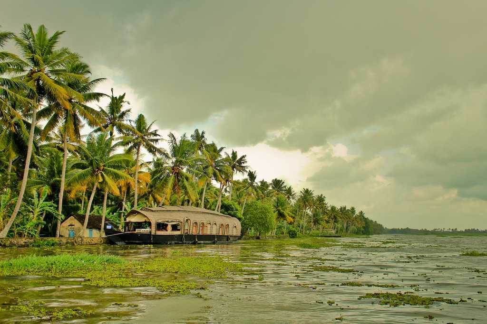

Wel come to kerala

KochiLying on the Malabar coast in the southwest of India, Kochi or Cochin is a port city Weather: 24 - 31°C Ideal duration: 1-2 days Best Time: July to April |

Kumarakom Travelemerald green waters flanked by lush vegetation, Kumarakom is an enchanting Weather: 24 - 30°C Ideal duration: 1-2 days Best Time: October - February |

MunnarFamous for the tea estates, greenery, winding roads, blanket of mist, and viewpoints Ideal duration: 2-3 days Weather: 16 - 23°C Best Time: September to May |

VarkalaVarkala is a coastal town in the southern part of Kerala known for the unique 15m Weather: 25 - 30°C Ideal duration: 1-2 days Best Time: October to February |